SAPT: Symmetry-Adapted Perturbation Theory¶
Code author: Edward G. Hohenstein and Rob M. Parrish
Section author: Edward G. Hohenstein
Module: Keywords, PSI Variables, LIBSAPT_SOLVER
Warning
In rare cases with systems having a high degree of symmetry, Psi4 gives (very obviously) wrong answers for SAPT computations when the specification is in Z-matrix format. Use a Cartesian representation to avoid this problem.
Caution
In early versions (notably Psi4 alpha circa 2011 and before), frozen core was implemented incompletely and for only selected terms. Comparisons with papers published using early Psi4 SAPT code may show discrepancies of 0.01-0.10 kcal/mol in individual terms, particularly 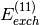 and 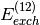.
Caution
January 28th 2016, the default for all NAT_ORBS options was changed to true. Hence the code now by default uses natural orbital truncation to speed up the evaluation of energy terms wherever possible, according to literature recommendations. In early July 2016, some total sapt energy psivars were renamed.
Symmetry-adapted perturbation theory (SAPT) provides a means of directly computing the noncovalent interaction between two molecules, that is, the interaction energy is determined without computing the total energy of the monomers or dimer. In addition, SAPT provides a decomposition of the interaction energy into physically meaningful components: i.e., electrostatic, exchange, induction, and dispersion terms. In SAPT, the Hamiltonian of the dimer is partitioned into contributions from each monomer and the interaction.
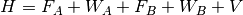
Here, the Hamiltonian is written as a sum of the usual monomer Fock
operators,  , the fluctuation potential of each monomer, , and the
interaction potential,
, the fluctuation potential of each monomer, , and the
interaction potential,  . The monomer Fock operators, 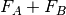, are
treated as the zeroth-order Hamiltonian and the interaction energy is
evaluated through a perturbative expansion of , 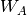, and 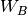.
Through first-order in , electrostatic and exchange interactions are
included; induction and dispersion first appear at second-order in . For
a complete description of SAPT, the reader is referred to the excellent
review by Jeziorski, Moszynski, and Szalewicz [Jeziorski:1994:1887].
. The monomer Fock operators, 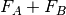, are
treated as the zeroth-order Hamiltonian and the interaction energy is
evaluated through a perturbative expansion of , 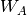, and 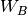.
Through first-order in , electrostatic and exchange interactions are
included; induction and dispersion first appear at second-order in . For
a complete description of SAPT, the reader is referred to the excellent
review by Jeziorski, Moszynski, and Szalewicz [Jeziorski:1994:1887].
Several truncations of the SAPT expansion are available in the SAPT module of Psi4. The simplest truncation of SAPT is denoted SAPT0 and defined in Eq. (1).
(1)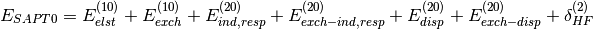
In this notation, 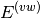 defines the order in and in 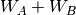; the
subscript, 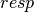, indicates that orbital relaxation effects are included.
(2)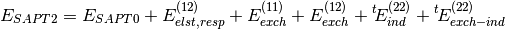
(3)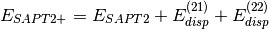
(4)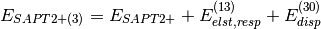
(5)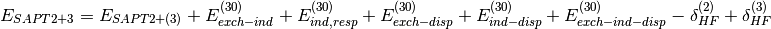
The 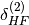 and 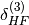 terms take into account higher-order induction effects and are included in the definition of SAPT terms. They are computed from the Hartree-Fock supermolecular interaction energy 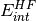 and are only available in dimer-centered basis SAPT computations, which is the default (see below for monomer-centered basis computations). They are defined by:
(6)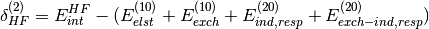
(7)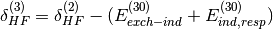
Additionally, high-order coupling between induction and dispersion can be extracted from the supermolecular MP2 interaction energy:
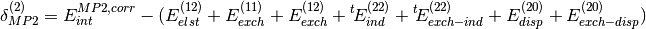
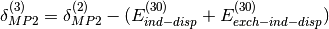
where  is the correlation part of the supermolecular MP2
interaction energy. and 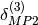 also improve the
description of electrostatically dominated complexes.
can be applied to SAPT2+ or SAPT2+(3) energies whereas
should be applied to SAPT2+3 energies.
is the correlation part of the supermolecular MP2
interaction energy. and 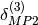 also improve the
description of electrostatically dominated complexes.
can be applied to SAPT2+ or SAPT2+(3) energies whereas
should be applied to SAPT2+3 energies.
A thorough analysis of the performance of these truncations of SAPT can be found in a review by Hohenstein and Sherrill [Hohenstein:2012:WIREs], and a systematic study of the accuracy of these truncations (with and without an improved CCD treatment of dispersion) using different basis sets is reported in [Parker:2014:094106].
The SAPT module relies entirely on the density-fitting approximation of the two-electron integrals. The factorization of the SAPT energy expressions, as implemented in Psi4, assumes the use of density-fitted two-electron integrals, therefore, the SAPT module cannot be run with exact integrals. In practice, we have found that the density-fitting approximation introduces negligible errors into the SAPT energy (often less than 0.01 kcal/mol for small dimers) and greatly improves efficiency.
The S2 approximation and scaling¶
All exchange terms in SAPT arise from the antisymmetrization of the wavefunctions of monomers A and B. Taking into account exchange of all possible electron pairs between the two monomers yields to complicated formulae. For this reason, exchange terms are often evaluated in the approximation, that can be interpreted as the exchange of a single electron pair between monomers.
The approximation is usually pretty good, but may break down for short intermolecular distance, particularly in high-order terms. To compensate these deviations, Parker et al. [Parker:2014:094106] recommend to scale all approximated exchange terms by the ratio:

where the recommended exponent is . To obtain SAPT energies with this scaling,
simply set the keyword exch_scale_alpha true. Alternatively, another value for  can be specified by setting EXCH_SCALE_ALPHA to a value. For example,
can be specified by setting EXCH_SCALE_ALPHA to a value. For example,
set exch_scale_alpha 1.0
will set and scale exchange energies with .
Instead of this straightforward scaling, SAPT0 energies benefit from a slightly modified recipe that involves an empirically adjusted exponent . To distinguish it from its unscaled counterpart, this energy is denoted sSAPT0 (see [Parker:2014:094106]).
(8)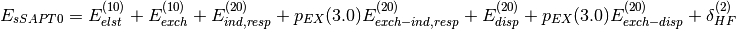
where is computed without any scaling. Please note that
sSAPT0 is thus not the same as requesting exch_scale_alpha 3.0.
A First Example¶
The following is the simplest possible input that will perform all available SAPT computations (normally, you would pick one of these methods).
molecule water_dimer {
0 1
O -1.551007 -0.114520 0.000000
H -1.934259 0.762503 0.000000
H -0.599677 0.040712 0.000000
--
0 1
O 1.350625 0.111469 0.000000
H 1.680398 -0.373741 -0.758561
H 1.680398 -0.373741 0.758561
units angstrom
no_reorient
symmetry c1
}
set globals {
basis aug-cc-pvdz
}
energy('sapt0')
energy('sapt2')
energy('sapt2+')
energy('sapt2+(3)')
energy('sapt2+3')
The SAPT module uses the standard Psi4 partitioning of the dimer
into monomers. SAPT does not use spatial symmetry and needs the geometry
of the system to remain fixed throughout monomer and dimer calculations.
These requirements are imposed whenever a SAPT calculation is requested
but can also be set explicitly with the no_reorient and symmetry
c1 molecule keywords, as in the example above. A final note is that the
SAPT module is only capable of performing SAPT computations for
interactions between closed-shell singlets.
The example input shown above would not be used in practice. To exploit the efficiency of the density-fitted SAPT implementation in Psi4, the SCF computations should also be performed with density-fitted (DF) integrals.
set globals {
basis aug-cc-pvdz
df_basis_scf aug-cc-pvdz-jkfit
df_basis_sapt aug-cc-pvdz-ri
guess sad
scf_type df
}
set sapt {
print 1
}
These options will perform the SAPT computation with DF-HF and a superposition-of-atomic-densities guess. This is the preferred method of running the SAPT module.
SAPT0¶
Generally speaking, SAPT0 should be applied to large systems or large data sets. The performance of SAPT0 relies entirely on error cancellation, which seems to be optimal with a truncated aug-cc-pVDZ basis, namely, jun-cc-pVDZ (which we have referred to in previous work as aug-cc-pVDZ’). We do not recommend using SAPT0 with large basis sets like aug-cc-pVTZ. A systematic study of the accuracy of SAPT0 and other SAPT truncations, using different basis sets, is reported in [Parker:2014:094106]. In particular, an empirical recipe for scaled SAPT0 can yield improved performance and has been included in the output file as the sSAPT0 interaction energy. sSAPT0 is a free by-product and is automatically computed when SAPT0 is requested (see above for more details). The SAPT module has been used to perform SAPT0 computations with over 200 atoms and 2800 basis functions; this code should be scalable to 4000 basis functions. Publications resulting from the use of the SAPT0 code should cite the following publications: [Hohenstein:2010:184111] and [Hohenstein:2011:174107].
Basic SAPT0 Keywords¶
SAPT_LEVEL¶
The level of theory for SAPT
- Type: string
- Possible Values: SAPT0, SAPT2, SAPT2+, SAPT2+3
- Default: SAPT0
BASIS¶
Primary basis set, describes the monomer molecular orbitals
- Type: string
- Possible Values: basis string
- Default: No Default
DF_BASIS_SAPT¶
Auxiliary basis set for SAPT density fitting computations. Defaults to a RI basis.
- Type: string
- Possible Values: basis string
- Default: No Default
DF_BASIS_ELST¶
Auxiliary basis set for SAPT Elst10 and Exch10 density fitting computations, may be important if heavier elements are involved. Defaults to DF_BASIS_SAPT
- Type: string
- Possible Values: basis string
- Default: No Default
FREEZE_CORE¶
The scope of core orbitals to freeze in evaluation of SAPT 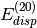 and 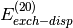 terms. Recommended true for all SAPT computations
- Type: string
- Possible Values: FALSE, TRUE
- Default: FALSE
D_CONVERGENCE¶
Convergence criterion for residual of the CPHF coefficients in the SAPT 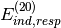 term.
- Type: conv double
- Default: 1e-8
E_CONVERGENCE¶
Convergence criterion for energy (change) in the SAPT term during solution of the CPHF equations.
- Type: conv double
- Default: 1e-10
Advanced SAPT0 Keywords¶
AIO_CPHF¶
Do use asynchronous disk I/O in the solution of the CPHF equations? Use may speed up the computation slightly at the cost of spawning an additional thread.
- Type: boolean
- Default: false
AIO_DF_INTS¶
Do use asynchronous disk I/O in the formation of the DF integrals? Use may speed up the computation slightly at the cost of spawning an additional thread.
- Type: boolean
- Default: false
NO_RESPONSE¶
Don’t solve the CPHF equations? Evaluate 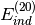 and 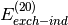 instead of their response-including coupterparts. Only turn on this option if the induction energy is not going to be used.
- Type: boolean
- Default: false
EXCH_SCALE_ALPHA¶
Whether or not to perform exchange scaling for SAPT exchange components. Default is false, i.e. no scaling. If set to true, performs scaling with
. If set to a value
- Type: string
- Default: FALSE
INTS_TOLERANCE¶
Minimum absolute value below which all three-index DF integrals and those contributing to four-index integrals are neglected. The default is conservative, but there isn’t much to be gained from loosening it, especially for higher-order SAPT.
- Type: conv double
- Default: 1.0e-12
DENOMINATOR_DELTA¶
Maximum error allowed (Max error norm in Delta tensor) in the approximate energy denominators employed for most of the and evaluation.
- Type: double
- Default: 1.0e-6
DENOMINATOR_ALGORITHM¶
Denominator algorithm for PT methods. Laplace transformations are slightly more efficient.
- Type: string
- Possible Values: LAPLACE, CHOLESKY
- Default: LAPLACE
Higher-Order SAPT¶
For smaller systems (up to the size of a nucleic acid base pair), more accurate interaction energies can be obtained through higher-order SAPT computations. The SAPT module can perform density-fitted evaluations of SAPT2, SAPT2+, SAPT2+(3), and SAPT2+3 energies. Publications resulting from the use of the higher-order SAPT code should cite the following: [Hohenstein:2010:014101].
For methods SAPT2+ and above, one can replace the many-body treatment of
dispersion by an improved method based on coupled-cluster doubles (CCD).
This approach tends to give good improvements when dispersion effects
are very large, as in the PCCP dimer (see [Hohenstein:2011:2842]).
As shown in [Parker:2014:094106], whether or not CCD dispersion offers
more accurate interaction energies tends to depend on the SAPT truncation
and basis set employed, due to cancellations of errors. Thanks to
natural orbital methods [Parrish:2013:174102], the SAPT code in Psi
is able to include CCD dispersion with only a modest additional cost.
Computations employing CCD dispersion should cite [Parrish:2013:174102].
To request CCD dispersion treatment in a SAPT computation, simply append
(ccd) to the name of the method, as in the following examples
energy('sapt2+(ccd)')
energy('sapt2+(3)(ccd)')
energy('sapt2+3(ccd)')
The corrections can also be computed automatically
by appending dmp2 to the name of the method, with or without CCD dispersion
energy('sapt2+dmp2')
energy('sapt2+(3)dmp2')
energy('sapt2+3dmp2')
energy('sapt2+(ccd)dmp2')
energy('sapt2+(3)(ccd)dmp2')
energy('sapt2+3(ccd)dmp2')
A brief note on memory usage: the higher-order SAPT code assumes that certain quantities can be held in core. This code requires sufficient memory to hold 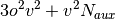 arrays in core. With this requirement computations on the adenine-thymine complex can be performed with an aug-cc-pVTZ basis in less than 64GB of memory.
Higher-order SAPT is treated separately from the higly optimized SAPT0 code, therefore, higher-order SAPT uses a separate set of keywords. The following keywords are relevant for higher-order SAPT.
Basic Keywords for Higher-order SAPT¶
BASIS¶
Primary basis set, describes the monomer molecular orbitals
- Type: string
- Possible Values: basis string
- Default: No Default
DF_BASIS_SAPT¶
Auxiliary basis set for SAPT density fitting computations. Defaults to a RI basis.
- Type: string
- Possible Values: basis string
- Default: No Default
FREEZE_CORE¶
Specifies how many core orbitals to freeze in correlated computations.
TRUEwill default to freezing the standard default number of core orbitals. For PSI, the standard number of core orbitals is the number of orbitals in the nearest previous noble gas atom. More precise control over the number of frozen orbitals can be attained by using the keywords NUM_FROZEN_DOCC (gives the total number of orbitals to freeze, program picks the lowest-energy orbitals) or FROZEN_DOCC (gives the number of orbitals to freeze per irreducible representation)
- Type: string
- Possible Values: FALSE, TRUE
- Default: FALSE
Advanced Keywords for Higher-order SAPT¶
DO_CCD_DISP¶
Do CCD dispersion correction in SAPT2+, SAPT2+(3) or SAPT2+3?
- Type: boolean
- Default: false
DO_MBPT_DISP¶
Do MBPT dispersion correction in SAPT2+, SAPT2+(3) or SAPT2+3, if also doing CCD?
- Type: boolean
- Default: true
DO_THIRD_ORDER¶
Do compute third-order corrections?
- Type: boolean
- Default: false
INTS_TOLERANCE¶
Minimum absolute value below which all three-index DF integrals and those contributing to four-index integrals are neglected. The default is conservative, but there isn’t much to be gained from loosening it, especially for higher-order SAPT.
- Type: conv double
- Default: 1.0e-12
SAPT_MEM_CHECK¶
Do force SAPT2 and higher to die if it thinks there isn’t enough memory? Turning this off is ill-advised.
- Type: boolean
- Default: true
MP2 Natural Orbitals¶
One of the unique features of the SAPT module is its ability to use MP2 natural orbitals (NOs) to speed up the evaluation of the triples contribution to dispersion. By transforming to the MP2 NO basis, we can throw away virtual orbitals that are expected to contribute little to the dispersion energy. Speedups in excess of are possible. In practice, this approximation is very good and should always be applied. Publications resulting from the use of MP2 NO-based approximations should cite the following: [Hohenstein:2010:104107].
Basic Keywords Controlling MP2 NO Approximations¶
NAT_ORBS_T2¶
Do use MP2 natural orbital approximations for the 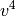 block of two-electron integrals in the evaluation of second-order T2 amplitudes? Recommended true for all SAPT computations.
- Type: boolean
- Default: true
NAT_ORBS_T3¶
Do natural orbitals to speed up evaluation of the triples contribution to dispersion by truncating the virtual orbital space? Recommended true for all SAPT computations.
- Type: boolean
- Default: true
NAT_ORBS_V4¶
Do use MP2 natural orbital approximations for the block of two-electron integrals in the evaluation of CCD T2 amplitudes? Recommended true for all SAPT computations.
- Type: boolean
- Default: true
OCC_TOLERANCE¶
Minimum occupation (eigenvalues of the MP2 OPDM) below which virtual natural orbitals are discarded for in each of the above three truncations
- Type: conv double
- Default: 1.0e-6
Charge-Transfer in SAPT¶
It is possible to obtain the stabilization energy of a complex due to charge-transfer effects from a SAPT computation. The charge-transfer energy can be computed with the SAPT module as described by Stone and Misquitta [Misquitta:2009:201].
Charge-transfer energies can be obtained from the following calls to the energy function.
energy('sapt0-ct')
energy('sapt2-ct')
energy('sapt2+-ct')
energy('sapt2+(3)-ct')
energy('sapt2+3-ct')
energy('sapt2+(ccd)-ct')
energy('sapt2+(3)(ccd)-ct')
energy('sapt2+3(ccd)-ct')
A SAPT charge-transfer analysis will perform 5 HF computations: the dimer in the dimer basis, monomer A in the dimer basis, monomer B in the dimer basis, monomer A in the monomer A basis, and monomer B in the monomer B basis. Next, it performs two SAPT computations, one in the dimer basis and one in the monomer basis. Finally, it will print a summary of the charge-transfer results:
SAPT Charge Transfer Analysis
------------------------------------------------------------------------------------------------
SAPT Induction (Dimer Basis) -2.0970 [mEh] -1.3159 [kcal/mol] -5.5057 [kJ/mol]
SAPT Induction (Monomer Basis) -1.1396 [mEh] -0.7151 [kcal/mol] -2.9920 [kJ/mol]
SAPT Charge Transfer -0.9574 [mEh] -0.6008 [kcal/mol] -2.5137 [kJ/mol]
These results are for the water dimer geometry shown above computed with SAPT0/aug-cc-pVDZ.
Monomer-Centered Basis Computations¶
The charge-transfer analysis above is carried out by taking the
difference between SAPT induction as calculated in the dimer-centered
basis (i.e., each monomer sees the basis functions on both monomers)
vs. the monomer-centered basis (i.e., each monomer utilizes only its
own basis set). It is also possible to run a SAPT computation at any
level using only the monomer-centered basis. To do this, simply add
sapt_basis='monomer' to the energy function, such as
energy('sapt2',sapt_basis='monomer')
This procedure leads to faster compuations, but it converges more slowly towards the complete basis set limit than the default procedure, which uses the dimer-centered basis set. Hence, monomer-centered basis SAPT computations are not recommended.
Interpreting SAPT Results¶
We will examine the results of a SAPT2+3/aug-cc-pVDZ computation on the water dimer. This computation can be performed with the following input:
molecule water_dimer {
0 1
O -1.551007 -0.114520 0.000000
H -1.934259 0.762503 0.000000
H -0.599677 0.040712 0.000000
--
0 1
O 1.350625 0.111469 0.000000
H 1.680398 -0.373741 -0.758561
H 1.680398 -0.373741 0.758561
units angstrom
}
set globals {
basis aug-cc-pvdz
guess sad
scf_type df
}
set sapt {
print 1
nat_orbs_t2 true
freeze_core true
}
energy('sapt2+3')
To reiterate some of the options mentioned above: the NAT_ORBS_T2 option will compute MP2 natural orbitals and use them in the evaluation of the triples correction to dispersion, and the FREEZE_CORE option will freeze the core throughout the SAPT computation. This SAPT2+3/aug-cc-pVDZ computation produces the following results:
SAPT Results
--------------------------------------------------------------------------------------------------------
Electrostatics -13.06509118 [mEh] -8.19846883 [kcal/mol] -34.30239689 [kJ/mol]
Elst10,r -13.37542977 [mEh] -8.39320925 [kcal/mol] -35.11719087 [kJ/mol]
Elst12,r 0.04490350 [mEh] 0.02817737 [kcal/mol] 0.11789413 [kJ/mol]
Elst13,r 0.26543510 [mEh] 0.16656305 [kcal/mol] 0.69689985 [kJ/mol]
Exchange 13.41768202 [mEh] 8.41972294 [kcal/mol] 35.22812415 [kJ/mol]
Exch10 11.21822294 [mEh] 7.03954147 [kcal/mol] 29.45344432 [kJ/mol]
Exch10(S^2) 11.13802706 [mEh] 6.98921779 [kcal/mol] 29.24289005 [kJ/mol]
Exch11(S^2) 0.04558907 [mEh] 0.02860757 [kcal/mol] 0.11969410 [kJ/mol]
Exch12(S^2) 2.15387002 [mEh] 1.35157390 [kcal/mol] 5.65498573 [kJ/mol]
Induction -3.91313050 [mEh] -2.45552656 [kcal/mol] -10.27392413 [kJ/mol]
Ind20,r -4.57530818 [mEh] -2.87104935 [kcal/mol] -12.01247162 [kJ/mol]
Ind30,r -4.91714746 [mEh] -3.08555675 [kcal/mol] -12.90997067 [kJ/mol]
Ind22 -0.83718642 [mEh] -0.52534243 [kcal/mol] -2.19803293 [kJ/mol]
Exch-Ind20,r 2.47828501 [mEh] 1.55514739 [kcal/mol] 6.50673730 [kJ/mol]
Exch-Ind30,r 4.33916119 [mEh] 2.72286487 [kcal/mol] 11.39246770 [kJ/mol]
Exch-Ind22 0.45347471 [mEh] 0.28455969 [kcal/mol] 1.19059785 [kJ/mol]
delta HF,r (2) -1.43239563 [mEh] -0.89884187 [kcal/mol] -3.76075473 [kJ/mol]
delta HF,r (3) -0.85440936 [mEh] -0.53614999 [kcal/mol] -2.24325177 [kJ/mol]
Dispersion -3.62000698 [mEh] -2.27158877 [kcal/mol] -9.50432831 [kJ/mol]
Disp20 -3.54291925 [mEh] -2.22321549 [kcal/mol] -9.30193450 [kJ/mol]
Disp30 0.05959979 [mEh] 0.03739944 [kcal/mol] 0.15647926 [kJ/mol]
Disp21 0.11216169 [mEh] 0.07038252 [kcal/mol] 0.29448051 [kJ/mol]
Disp22 (SDQ) -0.17892163 [mEh] -0.11227502 [kcal/mol] -0.46975875 [kJ/mol]
Disp22 (T) -0.47692534 [mEh] -0.29927518 [kcal/mol] -1.25216749 [kJ/mol]
Est. Disp22 (T) -0.54385233 [mEh] -0.34127251 [kcal/mol] -1.42788430 [kJ/mol]
Exch-Disp20 0.64545587 [mEh] 0.40502969 [kcal/mol] 1.69464439 [kJ/mol]
Exch-Disp30 -0.01823410 [mEh] -0.01144207 [kcal/mol] -0.04787362 [kJ/mol]
Ind-Disp30 -0.91816882 [mEh] -0.57615966 [kcal/mol] -2.41065224 [kJ/mol]
Exch-Ind-Disp30 0.76487181 [mEh] 0.47996433 [kcal/mol] 2.00817094 [kJ/mol]
Total HF -5.68662563 [mEh] -3.56841161 [kcal/mol] -14.93023559 [kJ/mol]
Total SAPT0 -8.58408901 [mEh] -5.38659740 [kcal/mol] -22.53752571 [kJ/mol]
Total SAPT2 -6.72343814 [mEh] -4.21902130 [kcal/mol] -17.65238683 [kJ/mol]
Total SAPT2+ -7.33405042 [mEh] -4.60218631 [kcal/mol] -19.25554938 [kJ/mol]
Total SAPT2+(3) -7.00901553 [mEh] -4.39822383 [kcal/mol] -18.40217026 [kJ/mol]
Total SAPT2+3 -7.18054663 [mEh] -4.50586123 [kcal/mol] -18.85252518 [kJ/mol]
Special recipe for scaled SAPT0 (see Manual):
Electrostatics sSAPT0 -13.37542977 [mEh] -8.39320925 [kcal/mol] -35.11719087 [kJ/mol]
Exchange sSAPT0 11.21822294 [mEh] 7.03954147 [kcal/mol] 29.45344432 [kJ/mol]
Induction sSAPT0 -3.47550008 [mEh] -2.18090932 [kcal/mol] -9.12492546 [kJ/mol]
Dispersion sSAPT0 -2.88342055 [mEh] -1.80937379 [kcal/mol] -7.57042064 [kJ/mol]
Total sSAPT0 -8.51612746 [mEh] -5.34395089 [kcal/mol] -22.35909265 [kJ/mol]
--------------------------------------------------------------------------------------------------------
At the bottom of this output are the total SAPT energies (defined above),
they are composed of subsets of the individual terms printed above. The
individual terms are grouped according to the component of the interaction
to which they contribute. The total component energies (i.e.,
electrostatics, exchange, induction, and dispersion) represent what we
regard as the best estimate available at a given level of SAPT computed
from a subset of the terms of that grouping. The groupings shown above are
not unique and are certainly not rigorously defined. We regard the groupings
used in Psi4 as a “chemist’s grouping” as opposed to a more
mathematically based grouping, which would group all exchange terms
(i.e. 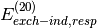, , etc.) in
the exchange component. A final note is that both Disp22(T)
and Est.Disp22(T) results appear if MP2 natural orbitals are
used to evaluate the triples correction to dispersion. The Disp22(T)
result is the triples correction as computed in the truncated NO basis;
Est.Disp22(T) is a scaled result that attempts to recover
the effect of the truncated virtual space and is our best estimate. The Est.Disp22(T)
value is used in the SAPT energy and dispersion component (see [Hohenstein:2010:104107]
for details). Finally, this part of the output file contains sSAPT0, a special scaling
scheme of the SAPT0 energy that can yield improved results and was described in more details
above. The corresponding scaled total component energies are printed as well.
As mentioned above, SAPT results with scaled exchange are also optionally available by setting the EXCH_SCALE_ALPHA keyword. When activated, the unscaled results are printed first as reported above, and then repeated with exchange scaling for all relevant terms:
SAPT Results ==> ALL S2 TERMS SCALED (see Manual) <==
Scaling factor (Exch10/Exch10(S^2))^{Alpha} = 1.007200
with Alpha = 1.000000
--------------------------------------------------------------------------------------------------------
Electrostatics -13.06509118 [mEh] -8.19846883 [kcal/mol] -34.30239689 [kJ/mol]
Elst10,r -13.37542977 [mEh] -8.39320925 [kcal/mol] -35.11719087 [kJ/mol]
Elst12,r 0.04490350 [mEh] 0.02817737 [kcal/mol] 0.11789413 [kJ/mol]
Elst13,r 0.26543510 [mEh] 0.16656305 [kcal/mol] 0.69689985 [kJ/mol]
Exchange sc. 13.43351854 [mEh] 8.42966050 [kcal/mol] 35.26970292 [kJ/mol]
Exch10 11.21822294 [mEh] 7.03954147 [kcal/mol] 29.45344432 [kJ/mol]
Exch10(S^2) 11.13802706 [mEh] 6.98921779 [kcal/mol] 29.24289005 [kJ/mol]
Exch11(S^2) sc. 0.04591732 [mEh] 0.02881355 [kcal/mol] 0.12055592 [kJ/mol]
Exch12(S^2) sc. 2.16937828 [mEh] 1.36130548 [kcal/mol] 5.69570268 [kJ/mol]
Induction sc. -3.90986540 [mEh] -2.45347768 [kcal/mol] -10.26535160 [kJ/mol]
Ind20,r -4.57530818 [mEh] -2.87104935 [kcal/mol] -12.01247162 [kJ/mol]
Ind30,r -4.91714746 [mEh] -3.08555675 [kcal/mol] -12.90997067 [kJ/mol]
Ind22 -0.83718642 [mEh] -0.52534243 [kcal/mol] -2.19803293 [kJ/mol]
Exch-Ind20,r sc. 2.49612913 [mEh] 1.56634474 [kcal/mol] 6.55358703 [kJ/mol]
Exch-Ind30,r sc. 4.37040396 [mEh] 2.74247000 [kcal/mol] 11.47449560 [kJ/mol]
Exch-Ind22 sc. 0.45673981 [mEh] 0.28660857 [kcal/mol] 1.19917038 [kJ/mol]
delta HF,r (2) sc. -1.45023975 [mEh] -0.91003922 [kcal/mol] -3.80760445 [kJ/mol]
delta HF,r (3) sc. -0.90349624 [mEh] -0.56695248 [kcal/mol] -2.37212939 [kJ/mol]
Dispersion sc. -3.60998364 [mEh] -2.26529903 [kcal/mol] -9.47801205 [kJ/mol]
Disp20 -3.54291925 [mEh] -2.22321549 [kcal/mol] -9.30193450 [kJ/mol]
Disp30 0.05959979 [mEh] 0.03739944 [kcal/mol] 0.15647926 [kJ/mol]
Disp21 0.11216169 [mEh] 0.07038252 [kcal/mol] 0.29448051 [kJ/mol]
Disp22 (SDQ) -0.17892163 [mEh] -0.11227502 [kcal/mol] -0.46975875 [kJ/mol]
Disp22 (T) -0.47692534 [mEh] -0.29927518 [kcal/mol] -1.25216749 [kJ/mol]
Est. Disp22 (T) -0.54385233 [mEh] -0.34127251 [kcal/mol] -1.42788430 [kJ/mol]
Exch-Disp20 sc. 0.65010327 [mEh] 0.40794598 [kcal/mol] 1.70684615 [kJ/mol]
Exch-Disp30 sc. -0.01836538 [mEh] -0.01152445 [kcal/mol] -0.04821832 [kJ/mol]
Ind-Disp30 -0.91816882 [mEh] -0.57615966 [kcal/mol] -2.41065224 [kJ/mol]
Exch-Ind-Disp30 sc. 0.77037903 [mEh] 0.48342016 [kcal/mol] 2.02263015 [kJ/mol]
Total HF -5.68662563 [mEh] -3.56841161 [kcal/mol] -14.93023559 [kJ/mol]
Total SAPT0 sc. -8.57944161 [mEh] -5.38368112 [kcal/mol] -22.52532395 [kJ/mol]
Total SAPT2 sc. -6.69968912 [mEh] -4.20411857 [kcal/mol] -17.59003378 [kJ/mol]
Total SAPT2+ sc. -7.31030140 [mEh] -4.58728357 [kcal/mol] -19.19319632 [kJ/mol]
Total SAPT2+(3) sc. -6.98526650 [mEh] -4.38332109 [kcal/mol] -18.33981720 [kJ/mol]
Total SAPT2+3 sc. -7.15142168 [mEh] -4.48758504 [kcal/mol] -18.77605762 [kJ/mol]
--------------------------------------------------------------------------------------------------------
The scaling factor is reported at the top (here 1.0072) together with the
parameter. All terms that are scaled are indicated by the sc.
keyword. Note that if Exch10 is less than  , the scaling factor is
set to .
, the scaling factor is
set to .